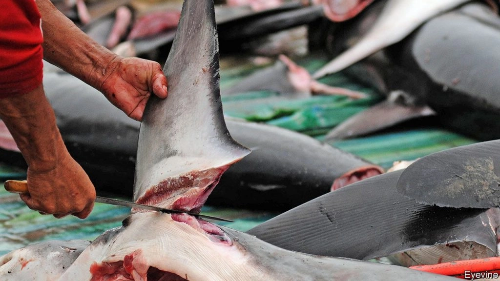
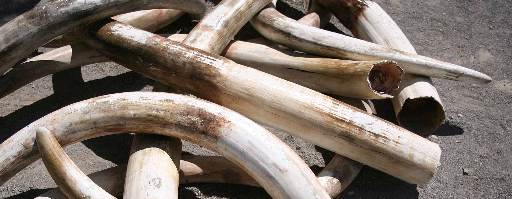

Elephant poaching


1. Elephants: Elephants are poached primarily for their ivory tusks, which are highly valued in illegal markets for use in jewelry, ornaments, and traditional medicines. The demand for ivory, particularly in Asia, drives this illegal trade, making it a lucrative business for poachers and contributing to the decline of elephant populations.
2. Rhinos: Rhinos are poached primarily for their horns, which are highly valued in illegal markets, especially in parts of Asia. Rhino horn is mistakenly believed to have medicinal properties and is also seen as a status symbol. This demand drives poaching, pushing rhino species toward critical endangerment.
3. Tigers: Tigers are poached primarily for their skin, bones, and body parts, which are used in traditional medicines, especially in Asia. Tiger skins are also sold as luxury items, while their bones are used in tiger bone wine, falsely believed to have health benefits. Poaching has significantly reduced tiger populations, pushing them to the brink of extinction, despite conservation efforts to protect these majestic animals.
4. Pangolins: Pangolins are the most trafficked mammals in the world, poached for their scales and meat. Their scales are highly valued in traditional Chinese medicine, despite a lack of scientific evidence for their medicinal properties. Pangolin meat is considered a delicacy in some cultures. This illegal trade has led to a severe decline in pangolin populations, pushing all eight species toward critical endangerment.
5. Gorillas: Gorillas are poached mainly for bushmeat and, in some cases, for the illegal pet trade. The hunting of gorillas for bushmeat is driven by demand in local and urban markets, where gorilla meat is considered a luxury. Additionally, baby gorillas are sometimes captured for sale as exotic pets. Poaching, along with habitat loss, has severely impacted gorilla populations, particularly in Central Africa.
6. Sea Turtles: Sea turtles are poached for their shells, meat, and eggs. Their shells, especially from the hawksbill turtle, are used to make jewelry and ornaments. In some regions, turtle meat and eggs are considered delicacies. This poaching, coupled with habitat destruction and bycatch in fishing gear, has led to a drastic decline in sea turtle populations, with many species now critically endangered.
7. Lions: Lions are poached for their bones, which are used as substitutes for tiger bones in traditional Asian medicines. Lion body parts, such as claws and teeth, are also sold as souvenirs or for use in rituals. The growing demand for lion bones in Asia, combined with habitat loss and human-wildlife conflict, has led to a decline in lion populations across Africa.
8. Snow Leopards: Snow leopards are poached for their beautiful fur, which is highly prized in the illegal wildlife trade for making luxury garments. Additionally, their bones and other body parts are used in traditional Asian medicines, similar to tiger parts. Poaching, combined with habitat loss and retaliatory killings by herders protecting livestock, has led to a significant decline in snow leopard populations, pushing this elusive species toward endangerment.
9. Orangutans: Orangutans are poached mainly for the illegal pet trade and for bushmeat. Baby orangutans are often captured and sold as exotic pets, but to obtain the infants, poachers typically kill the mothers. This, along with habitat destruction due to logging and palm oil plantations, has severely impacted orangutan populations in Southeast Asia, making them critically endangered.
10. Sharks: Sharks are poached mainly for their fins, which are used in shark fin soup, a delicacy in some Asian cultures. The practice of finning involves removing the fins and discarding the rest of the shark, often while still alive. This unsustainable practice has led to dramatic declines in shark populations worldwide, threatening the balance of marine ecosystems and pushing many species toward extinction.
11. African Grey Parrots: African Grey Parrots are poached primarily for the illegal pet trade, where they are highly sought after for their exceptional ability to mimic human speech. The demand for these intelligent birds has led to widespread illegal trapping, often with devastating effects on wild populations. Habitat loss also exacerbates their decline, and the species is now considered endangered due to overexploitation.
These are just a few examples of the endangered species that are affected by poaching. It's heartbreaking to see the impact that poaching has on these incredible creatures, but together we can raise awareness, support conservation efforts, and work towards protecting these species for future generations.




1. Ivory Poaching: Ivory, derived from elephant tusks, has long been sought after for its perceived value and beauty. Despite international bans, the demand for ivory still persists, driving poachers to target elephants for their tusks. This illegal trade has had a devastating impact on elephant populations across Africa and Asia.

2. Rhino Poaching: Rhinos are targeted for their horns, which are erroneously believed to have medicinal properties. These magnificent creatures face a grave threat as poachers relentlessly hunt them, pushing some species to the brink of extinction. Conservation efforts have been crucial in protecting rhinos, but the battle is far from over.

3. Trophy Hunting: Trophy hunting involves the killing of animals for their body parts or as a form of sport. It is a controversial practice that often targets charismatic species like lions, leopards, and bears. While some argue that it can generate funds for conservation efforts, others believe it promotes unethical treatment of animals and contributes to population decline.

4. Bushmeat Poaching: In many parts of the world, bushmeat poaching is driven by the demand for wild animal meat, which is considered a delicacy or a source of sustenance. Unsustainable hunting practices, often fueled by poverty and lack of alternatives, have led to the depletion of numerous species, including primates, antelopes, and pangolins.

5. Marine Poaching: Our oceans are not exempt from the threat of poaching. Marine species like sea turtles, sharks, and seahorses fall victim to illegal fishing practices. For example, the demand for shark fins drives the practice of finning, where sharks are caught, their fins are removed, and the rest of their bodies are discarded.

These are just a few examples of the types of poaching that are wreaking havoc on our planet's wildlife. It's essential for us to raise awareness, support conservation organizations, and advocate for stricter laws and enforcement to combat this global issue.
1. Wildlife Protection Acts: Many countries have specific wildlife protection acts that prohibit the hunting, capturing, or killing of endangered species. These acts also provide guidelines for the conservation and management of wildlife.
2. CITES: The Convention on International Trade in Endangered Species of Wild Fauna and Flora (CITES) is an international agreement aimed at regulating the trade of endangered species. It restricts the commercial exploitation of certain plants and animals and ensures their survival in the wild.
3. National Parks and Wildlife Reserves: Governments establish national parks and wildlife reserves to protect and conserve endangered species. These areas are legally protected, and poaching within their boundaries is strictly prohibited.
4. Hunting Regulations: Hunting regulations vary from country to country. They often define specific seasons, bag limits, and licensing requirements to ensure sustainable hunting practices and prevent overexploitation of wildlife.
5. Penalties and Fines: Poaching is considered a serious offense in many jurisdictions. Penalties for poaching can include imprisonment, fines, and confiscation of assets. These strict measures aim to deter potential poachers and send a strong message against illegal wildlife trade.
6. sCollaboration and Enforcement: Governments work with law enforcement agencies, wildlife authorities, and international organizations to enforce poaching laws effectively. This involves conducting investigations, raids, and apprehending individuals involved in illegal wildlife activities.
It's important to note that laws and regulations may vary depending on the country and region. To get specific information about the laws and regulations regarding poaching in a particular area, it's best to consult local wildlife authorities or conservation organizations. Together, we can support these laws and work towards a world where endangered species are protected for future generations.
